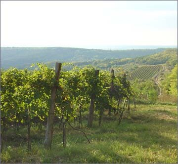

| DEUTSCH | ENGLISH | ||||||
| | BOROK | HÍREK | KÉPEK | | NYITÓLAP | ||||||
|
|
||||||
| „Emberé a munka, Istené az áldás” | ||||||
|
PARTNEREK szekszardibor.com ÍRÁSOK A BORAINKRÓL Kadarkás emberünk (Művelt Alkoholista blog) |
 | |||||
|
© Vesztergombi József, 2007. Minden jog fenntartva. Design: J-Grafika |
||||||